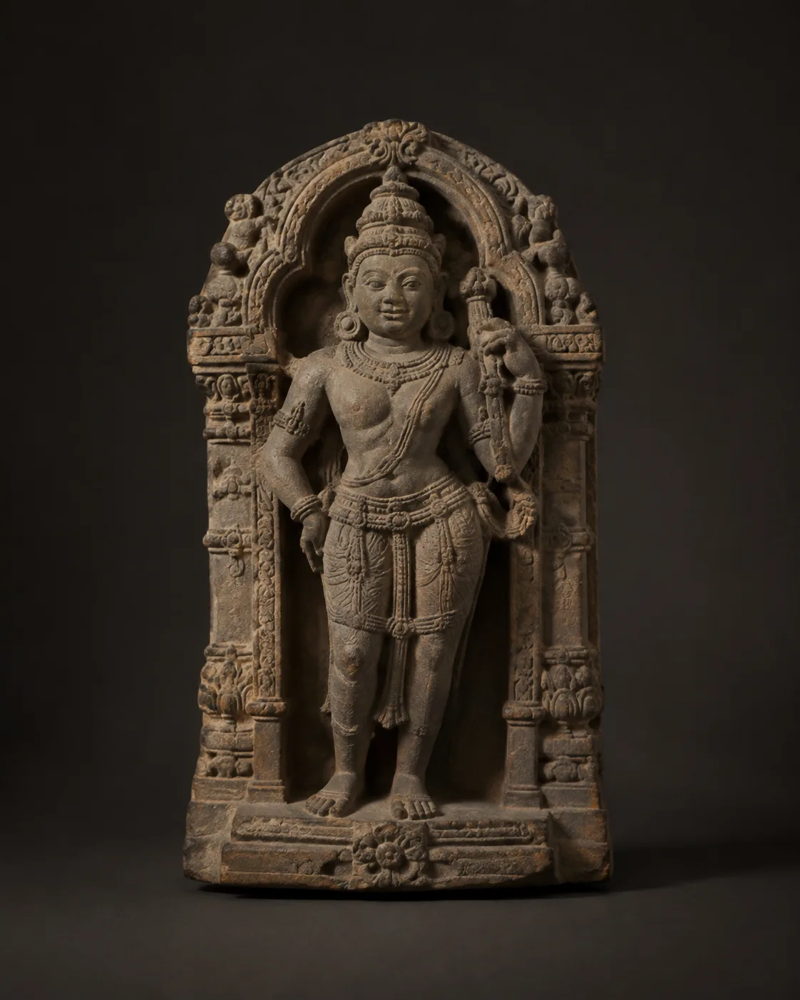

DEMO — An object biography
A sample object story showing the full breadth of the Archive taxonomy.
By Virsapur demo editor · 2026-12-03

Development-only story copy.
A sample object story showing the full breadth of the Archive taxonomy.
By Virsapur demo editor · 2026-12-03

Development-only story copy.